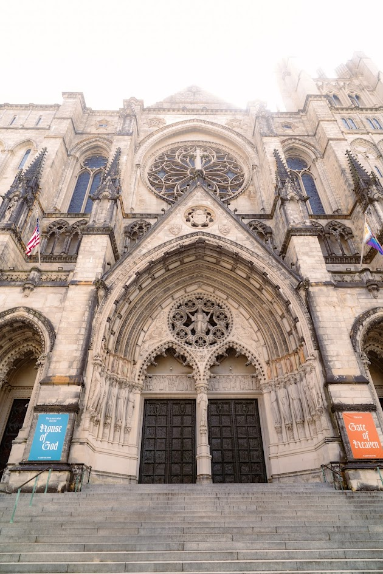

St. John the Divine Cathedral
St. John the Divine Cathedral is not only a place of worship but also a remarkable architectural and acoustic gem. Located in the heart of the city, its soaring ceilings, intricate stonework, and stained-glass windows create a breathtaking atmosphere that leaves a lasting impression on all who visit. I had the incredible opportunity to perform there, and it was truly an unforgettable experience. To perform at St. John's Cathedral is amazing—not just because of its grandeur, but because of the way your voice resonates throughout the space. As you sing, you can hear the echo of your voice dancing through the vast halls, blending with the reverent silence and amplifying every note. It’s a moment where music and sacred space come together in perfect harmony.

